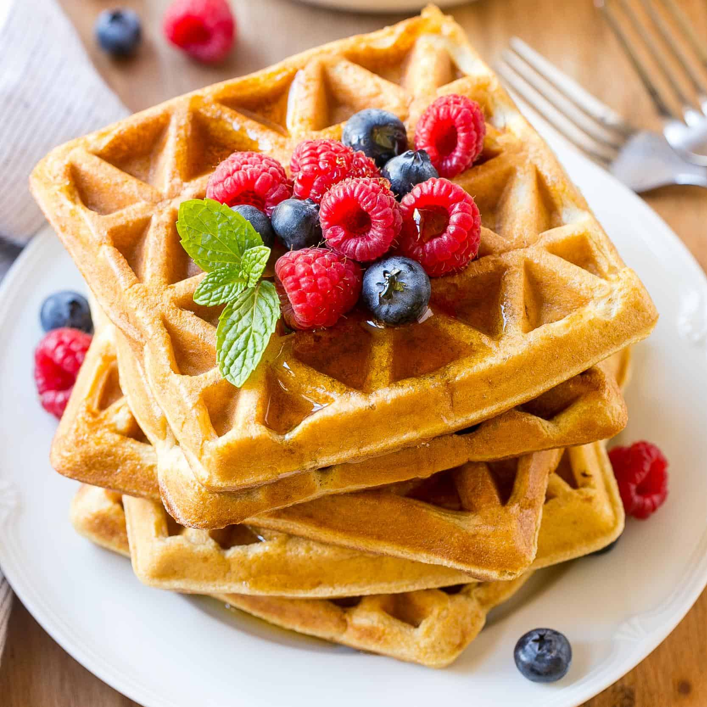

How to make protien waffles
Preheat waffle iron
Mix ingredients
1 cup oats
1 cup cottage cheese
2 eggs & 3 egg whites
1 teaspoon honey
Optional: vanilla extract and cinnamon
pour batter into waffle iron and cook until golden brown